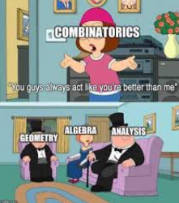
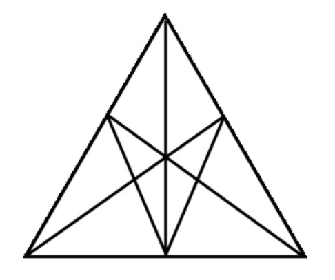
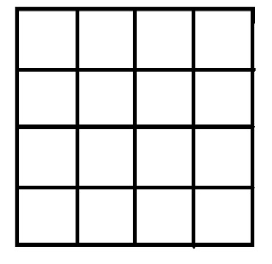

En este tema se abordan los siguientes contenidos
Permutaciones, variaciones y combinaciones
- Reconocer y modelizar situaciones de recuento combinatorio que impliquen:
- Variaciones con repetición de longitud k de n objetos distintos.
- Permutaciones de n objetos distintos (sin repetición).
- Variaciones sin repetición de k objetos tomados de un conjunto de n objetos distintos.
- Combinaciones sin repetición de k objetos tomados de un conjunto de n objetos distintos.
- Calcular los números de variaciones, permutaciones y combinaciones utilizando potencias, factoriales y las fórmulas correspondientes.
- Resolver problemas de probabilidad aplicando la definición clásica de probabilidad, utilizando variaciones, permutaciones y combinaciones, con y sin herramientas tecnológicas.
Probabilidad
- Obtener las siguientes fórmulas a partir de tablas de contingencia, diagramas de árbol y diagramas de Venn:
- \(P(\overline{A})=1-P(A)\).
- \(P(A\cup B)=P(A)+P(B)\), cuando \(A\cap B=\varnothing\).
- \(P(A\cup B)=P(A)+P(B)-P(A\cap B)\), cuando \(A\cap B\neq\varnothing\).
- Probabilidad condicionada: \(P(A\mid B)=\dfrac{P(A\cap B)}{P(B)}\).
- Identificar sucesos independientes utilizando las propiedades correspondientes.
- \(P(A\cap B)=P(A)\cdot P(B)\).
- \(P(A)=P(A\mid B)\).
- Comprender y aplicar el teorema de Bayes y la ley de la probabilidad total en la resolución de problemas.

Antes de entrar en harina, vamos poner a prueba algo que empezaste a hacer cuando eras casi un bebé: ¿qué tal sabes contar?
¿Cuántos triángulos ves?
¿Cuántos triángulos pueden verse en el dibujo? Los triángulos deben tener sus lados sobre las líneas del dibujo.

Fuente: Pablo Beltrán-Pellicer
¿Cuántos cuadrados hay?
¿Cuántos cuadrados pueden verse en el dibujo? Los cuadrados deben tener sus lados sobre las líneas del dibujo.

Fuente: Pablo Beltrán-Pellicer
Ampliación: ¿Serías capaz de responder a la misma pregunta pero contando rectángulos en lugar de cuadrados? ¿Cuántos rectángulos ves?
Materiales del tema
Hojas de ejercicios
- Problemas de la web versión PDF
- Problemas básicos con solución
- Problemas variados finales de Combinatoria (tipo COMPO)
- Problemas variados de ampliación
Bibliografía
- Cecilia Calvo Pesce et al. Aprender a enseñar matemáticas en la educación secundaria obligatoria. 2016.
- Rafael Roa et al. “Estrategias en la resolución de problemas combinatorios por estudiantes con preparación matemática avanzada”. En: Epsilon 36 (1997), pags. 433-446.
- Miguel R Wilhelmi. Combinatoria y probabilidad. Grupo de Investigación en Educación Estadística, Universidad de Granada, 2004
- Pablo Beltrán-Pellicer. Problemas para ver si sabemos contar. Tierra de Números, 2019. Disponible en https://tierradenumeros.com/post/problemas-para-ver-si-sabemos-contar/ .